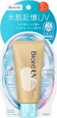

石けんで落としたい人

ビオレUV
アクアリッチ 水肌記憶 ウォータリーホールドクリーム 50g
50g
¥1,064税込・出典掲載価格
選び方と声
- 選ぶ条件：夜に落とすのが面倒で、石けんで落とせるものがいい人。商品ページの説明では、SPF50・ノンケミカル（紫外線吸収剤フリー）・アルコールフリー・せっけんで落とせる・化粧下地にも
- 紫外線吸収剤フリーで肌への負担が少ない、軽いつけ心地、という声が多い
気になる声気になる点：白浮きする、伸びが悪い・ベタつく、顔には使いにくいという声がある。SPFは50なので、冬の通勤程度なら薄めに、その日の予定で選ぶ
販売価格・容量・送料はリンク先でご確認ください